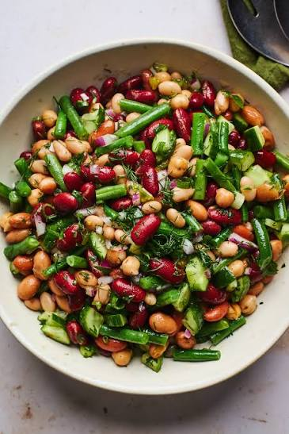

Salads
Home
Healthy Bean Salad

This healthy bean salad is a refreshing and nutritious dish, packed with protein
Ingredients
- 1 can (15 oz) black beans, drained and rinsed
- 1 can (15 oz) kidney beans, drained and rinsed
- 1 can (15 oz) chickpeas, drained and rinsed
- 1 cup cherry tomatoes, halved
- 1/2 cup red onion, finely chopped
- 1/4 cup fresh parsley, chopped
- 1/4 cup olive oil
- 2 tablespoons red wine vinegar
- 1 teaspoon Dijon mustard
- Salt and pepper to taste
Instructions
- In a large bowl, combine the black beans, kidney beans, chickpeas, cherry tomatoes, red onion, and parsley.
- In a small bowl, whisk together the olive oil, red wine vinegar, Dijon mustard, salt, and pepper.
- Pour the dressing over the bean mixture and toss until well coated.
- Refrigerate for at least 30 minutes to allow the flavors to meld together.
- Serve chilled as a side dish or a light main course.